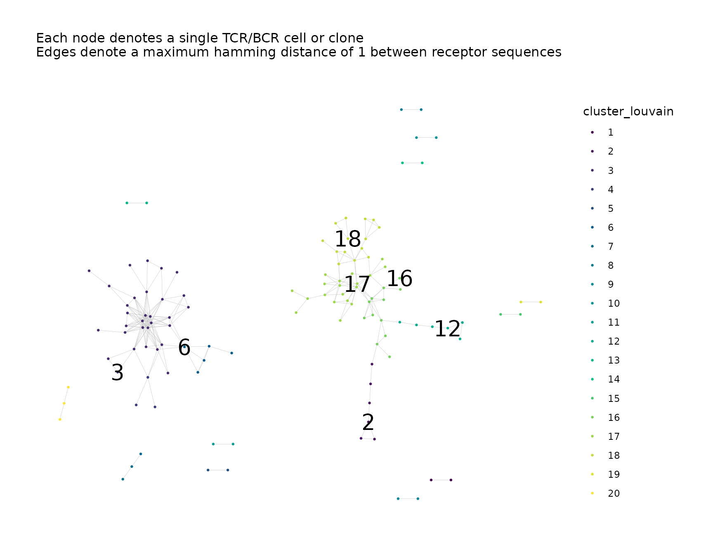

Introduction
The NAIR package contains a number of functions
supplementary to buildRepSeqNetwork() that can be used to
perform additional downstream tasks.
Simulate Data for Demonstration
We simulate some toy data for demonstration.
We simulate data consisting of two samples with 100 observations each, for a total of 200 observations (rows).
set.seed(42)
library(NAIR)
#> Welcome to NAIR: Network Analysis of Immune Repertoire.
#> Get started using `vignette("NAIR")`, or by visiting
#> https://mlizhangx.github.io/Network-Analysis-for-Repertoire-Sequencing-/
dir_out <- tempdir()
toy_data <- simulateToyData()
head(toy_data)
#> CloneSeq CloneFrequency CloneCount SampleID
#> 1 TTGAGGAAATTCG 0.007873775 3095 Sample1
#> 2 GGAGATGAATCGG 0.007777102 3057 Sample1
#> 3 GTCGGGTAATTGG 0.009094910 3575 Sample1
#> 4 GCCGGGTAATTCG 0.010160859 3994 Sample1
#> 5 GAAAGAGAATTCG 0.009336593 3670 Sample1
#> 6 AGGTGGGAATTCG 0.010369470 4076 Sample1
nrow(toy_data)
#> [1] 200Before we go through the various functions, the code below shows an example of how some of them might be used together.
library(magrittr) # For pipe operator (%>%)
toy_data %>%
filterInputData("CloneSeq", drop_matches = "\\W") %>%
buildNet("CloneSeq") %>%
addNodeStats("all") %>%
addClusterMembership("greedy", cluster_id_name = "cluster_greedy") %>%
addClusterMembership("leiden", cluster_id_name = "cluster_leiden") %>%
addClusterStats("cluster_leiden", "CloneSeq", "CloneCount") %>%
addPlots(color_nodes_by = c("cluster_leiden", "cluster_greedy"),
color_scheme = "Viridis"
) %>%
labelClusters("cluster_leiden", cluster_id_col = "cluster_leiden") %>%
labelClusters("cluster_greedy", cluster_id_col = "cluster_greedy") %>%
saveNetwork(output_dir = tempdir(), output_name = "my_network")
addPlots()
addPlots() can be used to generate plots of a network
graph.
net <- buildRepSeqNetwork(toy_data, "CloneSeq")
net <- addPlots(net, color_nodes_by = "SampleID")See this article for more details.
addNodeStats()
addNodeStats() can be used to compute node-level network
properties for a network.
net <- addNodeStats(net, stats_to_include = "all")See this article for more details.
addClusterStats()
addClusterStats() can be used to perform cluster
analysis for a network. It performs clustering, records the cluster
membership of the nodes, and computes cluster properties.
net <- addClusterStats(net, cluster_fun = "walktrap",
cluster_id_name = "cluster_walktrap")See this article for more details.
addClusterMembership()
addClusterMembership() can be used to perform clustering
and record the cluster membership of the nodes without computing cluster
properties. It is useful for performing multiple instances of clustering
with different algorithms.
net <- addClusterMembership(net,
cluster_fun = "leiden",
cluster_id_name = "cluster_leiden"
)
net <- addClusterMembership(net,
cluster_fun = "louvain",
cluster_id_name = "cluster_louvain"
)Refer here for more details.
addClusterLabels()
addClusterLabels() can be used to label the clusters in
a plot.
net <- addPlots(net,
color_nodes_by = "cluster_louvain",
color_scheme = "Viridis"
)
net <- labelClusters(net,
cluster_id_col = "cluster_louvain",
top_n_clusters = 7,
size = 7
)
net$plots$cluster_louvain
#> Warning: Removed 115 rows containing missing values or values outside the scale range
#> (`geom_text()`).
Refer here for more details.
labelNodes()
labelNodes() can be used to label the nodes in network
plots.
set.seed(42)
small_sample <- simulateToyData(1, sample_size = 10, prefix_length = 1)
net <- buildNet(small_sample, "CloneSeq", plot_title = NULL)
net <- labelNodes(net, "CloneSeq", size = 4)
net$plots[[1]]
saveNetwork()
saveNetwork() can be used to save a list of network
objects. Also prints any plots to a PDF containing one plot per
page.
saveNetwork(net, output_dir = dir_out, output_type = "individual")The parameters output_dir, output_type,
output_name, pdf_width and
pdf_height have the same behavior as they
do in the buildRepSeqNetwork() function.
saveNetworkPlots()
saveNetworkPlots() can be used to save the plots for a
network to a PDF containing one plot per page.
saveNetworkPlots(net$plots, outfile = file.path(dir_out, "plots.pdf"))
loadDataFromFileList()
loadDataFromFileList() can be used to load data from
multiple files and combine them into a single data frame.
dat <- loadDataFromFileList(list.files(my_dir), input_type = "rds")The primary parameter accepts a character vector containing file paths or a list containing file paths and connections. Each element corresponds to a single file. Each file is assumed to contain the data for a single sample, with observations indexed by row, and with the same columns across samples.
The supported values of input_type are
"rds", "rda", "csv",
"csv2", "tsv" and "table". Each
value specifies a different function to load the files. The respective
functions are readRDS(), load(),
read.csv(), read.csv2(),
read.delim(), and read.table().
Text formats
For text formats (values of input_type other than
"rds" and "rda"), non-default argument values
can be specified to the optional parameters of the reading function
using the read.args argument. It accepts a named list of
argument values.
loadDataFromFileList(list.files(my_dir),
input_type = "table",
read.args = list(
header = TRUE,
sep = " ",
dec = ",",
na.strings = "NA!",
row.names = 1,
col.names = c("RowID",
"CloneSeq", "CloneFrequency",
"CloneCount", "VGene"
)
)
)See ?utils::read.table() for the parameters and their
accepted values. Note that read.csv(),
read.csv2() and read.delim() are identical to
read.table() other than their default argument values. Some
examples of useful parameters include:
-
header: Whether the first row contains column names. -
sep: The character separating consecutive values in each row. -
dec: The character used as a decimal point. -
quote: The character(s) used as quotes within character strings. -
na.strings: The character string representing NA values. -
row.names: The row names or the column containing the row names. -
col.names: The column names, for files without a header row. -
colClasses: For manually specifying the class of each column. -
as.is: For specifying the character columns to be converted to factors. -
nrows: Max number of rows (specification can improve memory usage)
RData format
For the "rda" input type, the data_symbols
parameter accepts a character vector specifying the name of each
sample’s data frame within its respective Rdata file (i.e., the name of
the data frame in the R environment). A single character string can be
used if each sample’s data frame has the same name.
combineSamples()
combineSamples() has the same default behavior as
loadDataFromFileList(), but possesses additional parameters
that give it extra functionality, such as the ability to filter data and
assign sample/subject/group IDs to each data file, which are then
included as variables in the combined data frame.
dat <- combineSamples(list.files(my_dir),
input_type = "rds",
min_seq_length = 7,
drop_matches = "[*|_]",
subset_cols = c("CloneSeq", "CloneCount", "VGene"),
sample_ids = 1:5,
subject_ids = c(1, 2, 2, 3, 3),
group_ids = c(1, 1, 1, 2, 2)
)
filterInputData()
filterInputData() can be used to filter data prior to
performing network analysis.
filtered_data <- filterInputData(toy_data,
seq_col = "CloneSeq",
min_seq_length = 13,
drop_matches = "GGGG",
subset_cols = c("CloneFrequency", "SampleID"),
count_col = "CloneCount",
verbose = TRUE
)
#> Warning: The `count_col` argument of `filterInputData()` is deprecated as of NAIR 1.0.1.
#> This warning is displayed once every 8 hours.
#> Call `lifecycle::last_lifecycle_warnings()` to see where this warning was
#> generated.
#> Input data contains 200 rows.
#> Removing sequences with length fewer than 13 characters... Done. 136 rows remaining.
#> Removing sequences containing matches to "GGGG"... Done. 105 rows remaining.The function has parameters data,
seq_col, min_seq_length,
drop_matches and subset_cols,
all of which behave in the same manner as seen in
buildRepSeqNetwork(). In addition, the
count_col parameter can be used to specify a column
containing the clone count or UMI count. If specified, observations with
NA values in this column will be removed from the data.
aggregateIdenticalClones()
aggregateIdenticalClones() can be used on bulk AIRR-seq
data to aggregate data rows containing the same clone sequence, with the
clone counts and clone frequencies being added together. Aggregation can
be restricted to being performed only within groups that are defined
based on specified grouping variables.
my_data <- data.frame(
clone_seq = c("ATCG", rep("ACAC", 2), rep("GGGG", 4)),
clone_count = rep(1, 7),
clone_freq = rep(1/7, 7),
time_point = c("t_0", rep(c("t_0", "t_1"), 3)),
subject_id = c(rep(1, 5), rep(2, 2))
)
# group clones by time point and subject ID
data_agg_time_subject <-
aggregateIdenticalClones(my_data,
clone_col = "clone_seq",
count_col = "clone_count",
freq_col = "clone_freq",
grouping_cols = c("subject_id", "time_point")
)
getNeighborhood()
getNeighborhood() can be used to extract a subset of
observations with receptor sequences sufficiently similar to a target
sequence.
nbd <- getNeighborhood(toy_data,
seq_col = "CloneSeq",
target_seq = "GGGGGGGAATTGG"
)
generateNetworkObjects()
generateNetworkObjects() can be used to construct the
minimal output possible from buildRepSeqNetwork(). It does
not filter the input data, produce plots, compute network properties,
perform cluster analysis or save data.
net <- generateNetworkObjects(toy_data, "CloneSeq")The function has parameters data,
seq_col, dist_type,
dist_cutoff and drop_isolated_nodes, all
of which have the same behavior and default values as seen in
buildRepSeqNetwork().
generateNetworkGraph()
generateNetworkGraph() can be used to generate the
network igraph from the adjacency matrix.
net$igraph <- generateNetworkGraph(net$adjacency_matrix)
generateAdjacencyMatrix()
generateAdjacencyMatrix() can be used to compute the
network adjacency matrix from the list of receptor sequences.
output$adjacency_matrix <- generateAdjacencyMatrix(toy_data$CloneSeq)
# use same settings from original call to buildRepSeqNetwork()
net$adjacency_matrix <- generateAdjacencyMatrix(
net$node_data$CloneSeq,
dist_type = net$details$dist_type,
dist_cutoff = net$details$dist_cutoff,
drop_isolated_nodes = net$details$drop_isolated_nodes
)The parameters dist_type, dist_cutoff and
drop_isolated_nodes have the same
behavior and default values as in
buildRepSeqNetwork().